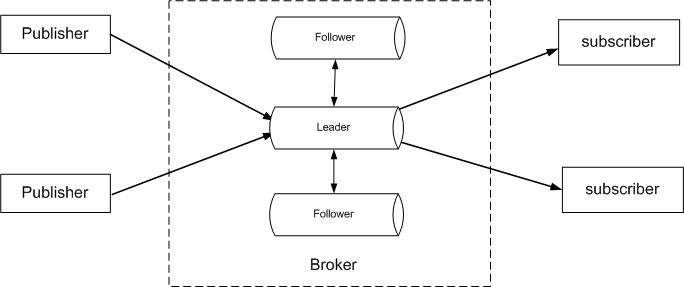

流数据高可用
1. 概述
DolphinDB支持流数据的发布、订阅、预处理、实时内存计算、复杂指标的滚动窗口计算等，既能处理分析实时数据，也能对历史数据进行计算分析，帮助用户利用、发挥这些数据的价值。为满足流数据服务不中断的需求，DolphinDB提供了流数据的高可用功能。
一个发布订阅流数据系统包含三个角色: Publisher（生产者），Broker和Subscriber（消费者）。在DolphinDB流数据框架中，Broker由DolphinDB的数据节点担任，Publisher和Subscriber由DolphinDB数据节点或第三方API程序担任。

如上图所示，DolphinDB流数据高可用功能采用了基于Raft协议的高可用多副本架构。相同流数据的副本存储在Raft组内不同的数据节点上，Raft协议用来维护多个副本的一致性。Raft组具有自动恢复的性质，当少数节点失效的时候不影响Raft组的正常工作，当大多数节点失效的时候，Raft组则会停止服务。Raft组能够容忍小于半数的节点宕机，例如包含三个节点的组，可以容忍一个节点出现故障；包含五个节点的组，可以容忍两个节点出现故障。正常情况下Raft组内只有一个Leader（领导节点）负责响应来自所有客户端的请求、为客户端提供服务，其他节点都是Follower（追随节点）。DolphinDB流数据的高可用包括Broker的高可用、生产者和消费者的高可用，并具有以下特性：
- 每个节点上可以定义一个或多个Raft组，一个Raft组可以接纳多个流数据表。
- 一个流数据表创建时可指定一个Raft组，表明该表为高可用的流数据表。如果没有指定Raft组，就是普通的流数据表。
- Publisher向Leader写入数据。若写入失败或者收到非Leader异常，就自动切换到新的Leader节点写入。
- Subscriber从Leader订阅流数据。Leader重新选举后，从Leader变换为Follower时，Broker会主动断开这个Raft组内所有的流数据表对应的订阅端连接。Subscriber连接被断开，或者收到新的Leader选出的通知后，会自动向新的Leader发起订阅。
本教程说明如何使用Broker的高可用功能、生产者和消费者的高可用功能，以及如何提高高可用流数据流数据表的写入性能。
2. Broker的高可用
2.1. 集群配置
在启用流数据高可用功能前，需要先在多个服务器上部署DolphinDB集群（目前高可用功能仅在集群中支持，在单节点模式中不支持)，然后根据流数据教程配置相关参数，再创建高可用流数据表。高可用相关的配置项主要的有：
- streamingHAMode：高可用功能采用的协议，目前固定配置为raft，表明流数据高可用功能采用了Raft协议。
- streamingRaftGroups：配置Raft组。格式为:"groupId:data_node+"，其中groupId表示Raft组号，为大于等于2的整数，data_node为数据节点，须配置至少3个，中间用冒号分隔。系统支持配置多组，用逗号分隔。建议每组的数据节点分别位于不同的服务器上，以防止一台服务器宕机，组内数据节点都不可用。
- persistenceDir：流数据表的保存路径。高可用流数据表数据要保存到磁盘上，必须配置persistenceDir。在集群模式中，需要保证同一机器上的数据节点配置了不同的persistenceDir。
- streamingHADir：流数据Raft日志文件的存储目录。Raft日志包括注册表、删除表、append（追加）数据等信息。为保证断电后不丢失数据，DolphinDB会调用fsync把日志刷到磁盘上。一般HDD硬盘上fsync性能比较差，例如有的HDD硬盘刷一次要10-30毫秒，为了保证性能，建议这个目录配置在SSD硬盘上。如果不配置，系统默认值为 <HomeDir>/log/streamLog。如果在同一个服务器上部署了多个数据节点，每个节点应当配置不同的streamingHADir。
- streamingHAPurgeInterval：Raft日志垃圾回收周期。在系统运行时，节点中的Raft日志信息若不断增长，会影响节点恢复时状态回放的效率。Raft采用Checkpoint（检查点）的方式来截断日志。做Checkpoint有一些需要注意的性能点：不要做得太频繁，否则消耗磁盘带宽；也不要做得太不频繁，否则一旦节点重启需要回放大量日志，影响可用性。系统默认值300，单位为秒。
用户需要在集群cluster.cfg配置文件中配置上述参数。以下例子配置了2个Raft组，组2包含3个数据节点，分别为DataNode1、DataNode3和DataNode5。组3包含3个数据节点，分别为DataNode2、DataNode4和DataNode6。
streamingHAMode=raft
streamingRaftGroups=2:DataNode1:DataNode3:DataNode5,3:DataNode2:DataNode4:DataNode62.2. 获取Raft组
可使用getStreamingRaftGroups函数以获取与验证用户在集群配置的Raft组。
此函数只能获取当前数据节点上配置的Raft组。例如在上述例子中配置的DataNode1上运行getStreamingRaftGroups()，结果如下：
| id | sites |
|---|---|
| 2 | 192.168.1.11:19151:DataNode1,192.168.1.12:19153:DataNode3,192.168.1.13:19155:DataNode5 |
2.3. 获取Raft组的Leader
在集群中配置Raft组后，每个Raft组会自动选出Leader，组中其他节点为Follower，由Leader为客户端提供流数据订阅服务。当Leader出现故障不可用时，系统会自动选举出新的Leader来提供流数据服务。获取指定raft组的Leader，可以调用函数getStreamingLeader。函数语法如下：
getStreamingLeader(groupId)其中参数groupId是Raft组的编号。
需要注意的是，要获取指定Raft组的Leader，只能在该组配置的数据节点上运行该函数。例如要获取上述例子配置的Raft组2的Leader，可以在DataNode1、DataNode3或DataNode5上运行下列代码：
getStreamingLeader(2)若要在其他节点上获取组2的Leader，需要先获取配置了该组的任意节点，然后使用rpc函数到该节点获取Leader。例子如下：
t=exec top 1 id,node from pnodeRun(getStreamingRaftGroups) where id =2
leader=rpc(t.node[0],getStreamingLeader,t.id[0])2.4. 创建高可用流数据表
创建高可用流数据表使用函数haStreamTable。语法如下：
haStreamTable(raftGroup, table, tableName, cacheLimit, [keyColumn], [retentionMinutes=1440])参数raftGroup是一个大于1的整数，表示Raft组的ID，它必须是通过streamingRaftGroups配置的Raft组中的一个成员。
可选参数keyColumn是一个字符串，表示主键。设置了keyColumn后，系统能根据keyColumn自动过滤重复数据。比如从设备采集的流数据，这个keyColumn产生规则可以是设备编号+每个设备的消息唯一号；从股市获取的股票信息，keyColumn可以是股票编码+每个股票消息的唯一号，这样从多个采集源采集入库或重复入库，都能保证数据不重复。
一个Raft组可以包含多个高可用流数据表。这里要注意以下几点：
- 高可用流数据表在日志中持久化了表结构信息，重启后不需要重新建表。普通流数据表在节点重启后，需要重新创建流数据表。
- 客户端只需订阅Raft组中任意一个数据节点上的高可用流数据表，并启用订阅的自动重连功能。Leader上的高可用流数据表会向客户端发布数据。如果Raft组中的Leader宕机，系统会选举出新的Leader继续发布数据，客户端会自动切换订阅到新的Leader上的高可用流数据表。
- 在启动高可用流数据功能后，普通流数据表和高可用流数据表可共存于同一个数据节点上。普通流数据表与高可用流数据表也可互相兼容，但从普通流数据表转化为同名高可用流数据表时，要注意清除之前普通流数据表的数据和日志（使用
dropStreamTable命令进行删除）。与普通流数据表一样，查看高可用流数据表的元数据信息可使用getPersistenceMeta函数。
下面的例子在Raft组2上创建了一个高可用流数据表haDevSt，其中cacheLimit是100000，keyColumn是id。
t1=table(1:0, ["id","source_address","source_port","destination_address","destination_port"], [STRING,INT,INT,INT,INT] )
haStreamTable(2,t1,"haDevSt",100000,"id")
2.5. 删除高可用流数据表
删除高可用流数据表可调用命令dropStreamTable。语法如下：
dropStreamTable(tableName)用户需要在取消所有订阅客户端后才能删除流数据表。
注意：dropStreamTable也支持删除普通流数据表。普通流数据表还可以用clearTablePersistence(objByName(tableName))（若有持久化）和undef(tableName,SHARED)命令删除。
3. 生产者和消费者的高可用
3.1. 写入流数据
生产者向流数据表写入数据，只能向Leader节点写入，向Follower节点写数据会抛出NotLeader异常。目前JAVA API、C++ API和Python API已支持流数据生产者的高可用，能自动捕获这个异常，并获取异常中携带的新Leader的节点信息，然后向新Leader继续写入数据。在API中，要求在connect函数中指定highAvailabilitySites参数。highAvailabilitySites是一个String类型的Array，每个String都是host:port格式。这样在Leader切换时，就能自动切换到highAvailabilitySites中的另一个节点，即新的Leader。JAVA API代码举例如下：
String[] haSites = new String[]{"192.168.1.11:19151","192.168.1.12:19153","192.168.1.13:19155"};
conn.connect(host,port,"admin", "123456", initScript, true,haSites);Python API代码举例如下：
conn.connect(host, port, "admin","123456", initScript, True, ["192.168.1.2:9921", "192.168.1.3:9921","192.168.1.4:9921"])3.2. 订阅流数据
客户端只需订阅Raft组中任意一个数据节点上的高可用流数据表，并启用订阅的自动重连功能（即把subscribeTable的reconnect参数设置为true）。Leader上的高可用流数据表会向订阅端发布数据。如果Raft组中的Leader宕机，系统会选举出新的Leader继续发布数据，客户端会自动切换订阅到新Leader上的高可用流数据表。
同时针对高可用流数据表，subscribeTable提供了持久化保存最新一条已经处理过的订阅数据的偏移量的功能，以避免在重订阅时部分未处理的数据丢失，通过设置参数persistOffset=true可开启该功能。偏移量可以通过getTopicProcessedOffset函数获取。
下面的例子在Raft组2上创建了一个高可用流数据表haDevSt。然后在集群中的某个节点上执行subscribeTable，向Leader节点订阅haDevSt。subscribeTable的参数reconnect和persistOffset设为true。
t1=table(1:0, ["id","source_address","source_port","destination_address","destination_port"], [STRING,INT,INT,INT,INT] )
haStreamTable(2,t1,"haDevSt",100000,"id")
t=select id,node from pnodeRun(getStreamingRaftGroups) where id =2
def msgProc(msg){ //todo
}
subscribeTable(server=t.node[0], tableName="haDevSt", handler=msgProc, reconnect=true, persistOffset=true)当流数据表启用高可用时，API客户端连接必须启用重连功能。目前JAVA API、C++ API和Python API已支持流数据消费者的高可用。其实现原理如下：
- 客户端订阅时，保存raftGroup中所有节点的site（节点信息）。
- Leader变为Follower时，Broker会主动关闭这个组中所有的流数据表对应的订阅，所以客户端就会发起重连。
- 客户端重连时如果连接到了Follower上，会收到Not Leader Exception的异常，这个异常中还携带了目前新Leader的信息（如果Leader尚未被选出，Follower就返回自身节点信息）。客户端收到这个异常之后，等待一段时间后再尝试连接新的Leader。
- 客户端重连一个节点多次都失败时，则开始尝试连接其他配置的节点。
4. 流数据高可用的设计
流数据高可用架构采用Raft协议实现一致性。Raft采用分而治之的办法，将复杂问题分解为三个子问题：选举（Leader election）、日志复制（Log replication）和安全性（Safety）。Raft开始时先在组内选举出Leader负责日志复制的管理，Leader接受来自客户端的事务请求（日志），并将它们复制给组内其它节点，然后负责通知组内其它节点提交日志，Leader负责保证其它节点与它的日志同步，当Leader宕机后组内其它节点会发起选举选出新的Leader。
DolphinDB的Raft日志内容包含流数据表的增删信息和流数据表记录的添加信息，系统对Raft日志采取同步顺序写的方式保存到磁盘。当流数据表较大时，为了避免内存不足，系统会把流数据表中较旧的数据从内存中清理，保存到磁盘。因此消费者订阅比较旧的数据时，就需要从数据文件中加载。Raft日志顺序存放，获取流数据时就需要从头回放，不能满足快速订阅的需求，所以流数据存储时引入了数据日志并建立索引，发布时用索引来帮助系统快速定位到订阅的起始行。系统对每个Raft日志记录一个LSN（Log Sequence Number），对每个数据文件也记录一个LSN（表示对数据文件进行修改的最新Raft日志记录），每次异步写入数据文件之后更新LSN。在恢复的时候，对比日志记录的LSN与数据文件的LSN, 若Raft日志的LSN小于数据文件的LSN，那么表明这个日志已经写入数据文件，可以不用重做（Redo），否则需要重做。Raft日志会不断增长，当Raft日志达到一定大小时，系统采用Checkpoint（检查点）的方式截断日志，以免日志膨胀。
流数据生产者写入流数据时，把数据发送到Leader，Leader收到之后，先写入log记录到Raft日志，然后一边复制Raft日志到Follower，一边异步写入数据文件，等复制Raft日志和写数据文件都完成后，再回复生产者写入成功。收到Leader发来的日志后，Follower节点直接异步把日志写入数据文件。通过Raft日志、数据日志和Raft一致性协议，保证了生产者成功写入的流数据是不会丢失的。当一个节点宕机或重启时，Raft协议能保证Leader把Follower离线时写入的数据同步更新到这个节点，最终保持与组内其他副本的一致，以保证数据不丢失。但这个同步过程可能耗时过长，影响正常日志条目的复制，所以当这个节点离线时间较长、写入流数据量已很大时，建议在系统空闲时再重新加入Raft组。
流数据写入和订阅都不是事务的，所以不能保证不写入重复数据，比如在Leader向生产者发送成功写入确认消息时，因网络或其他原因，生产者没收到这个消息，那生产者就可能重写这些数据导致重复。订阅者收到消息并处理后会把消息编号记录下来，下次重订阅时会根据记录的消息编号，订阅下一个消息。若在处理消息的过程中出了异常，导致数据已入库，但消息编号还没记录下来，那就可能重复订阅这个消息。DolphinDB系统提供了流数据表的主键功能，设置主键后，系统能根据主键自动过滤重复数据，以免在生产端写入重复数据。
5. 高可用流数据表的性能
高可用流数据表因为需要向Follower节点复制副本，难免会影响写入性能。那这个影响有多大呢？我们在三台服务器上部署一个集群进行了比较测试。为减少网络传输、磁盘IO对性能的影响，三台服务器之间用万兆网卡连接，流数据Raft日志文件的存储目录配置在固态硬盘上，流数据表的记录保存路径配置在机械硬盘上。高可用流数据表、普通流数据表的保存模式、压缩模式保持一致，都设为同步保存和不压缩。写入流数据的API客户端与Leader节点运行在同一台服务器上。在测试时，我们让高可用表的Leader节点写入和普通流数据表的写入都在同一台服务器的同一个磁盘上进行，每次测试前，把流数据表及数据都清除干净以保持环境一致。
流数据表定义详见附件，其中普通流数据表和高可用流数据表的列数保持一致，每列的数据类型也保持一致，为了测试每行记录字节总数对性能的影响，我们测了列数较少（11列）和列数较多（211列）两种情况。因为每写入一批都要对Raft日志刷盘一次，增加单批写入的记录数可提高系统吞吐量，所以还测试了不同单批数量的情况。一般用多线程能提升整体处理性能，所以还测了4个线程的情况。列数较少时测试结果如下表：
| 总写入记录数 | 线程数 | 单批数量/线程 | 写入次数/线程 | 高可用写入耗时ms | 高可用写入速率（条/秒） | 普通写入耗时 | 普通写入速率（条/秒） | 高可用/普通速率比 |
|---|---|---|---|---|---|---|---|---|
| 10,000 | 1 | 1 | 10,000 | 14,884 | 671.9 | 6,597 | 1,515.8 | 44.3% |
| 1,000,000 | 1 | 100 | 10,000 | 419,572 | 2,383.4 | 407,980 | 2,451.1 | 97.2% |
| 10,000,000 | 1 | 1,000 | 10,000 | 440,250 | 22,714.4 | 421,990 | 23,697.2 | 95.9% |
| 10,000,000 | 1 | 10,000 | 1,000 | 26,382 | 379,046.3 | 18,868 | 529,997.9 | 71.5% |
| 40,000 | 4 | 1 | 10,000 | 45,213 | 884.7 | 7,120 | 5,618.0 | 15.7% |
| 4,000,000 | 4 | 100 | 10,000 | 421,568 | 9,488.4 | 40,150 | 9,776.4 | 97.1% |
| 40,000,000 | 4 | 1,000 | 10,000 | 446,746 | 89,536.3 | 427,825 | 93,496.2 | 95.8% |
| 40,000,000 | 4 | 10,000 | 1,000 | 59,203 | 675,641.4 | 35,509 | 1,126,475.0 | 60.0% |
列数较多时测试结果如下表：
| 总写入记录数 | 线程数 | 单批数量/线程 | 写入次数/线程 | 高可用写入耗时ms | 高可用写入速率（条/秒） | 普通写入耗时 | 普通写入速率（条/秒） | 高可用/普通速率比% |
|---|---|---|---|---|---|---|---|---|
| 10,000 | 1 | 1 | 10,000 | 427,502 | 23.4 | 419,282 | 23.9 | 98.1% |
| 1,000,000 | 1 | 100 | 10,000 | 256,728 | 3,895.2 | 242,651 | 4,121.1 | 94.5% |
| 10,000,000 | 1 | 1,000 | 10,000 | 458,010 | 2,1833.6 | 339,780 | 29,430.8 | 74.2% |
| 10,000,000 | 1 | 10,000 | 1,000 | 167,349 | 59,755.4 | 112,188 | 89,136.1 | 67.0% |
| 40,000 | 4 | 1 | 10,000 | 429,201 | 93.2 | 415,907 | 96.2 | 96.9% |
| 4,000,000 | 4 | 100 | 10,000 | 295,807 | 13,522.3 | 171,150 | 23,371.3 | 57.9% |
| 40,000,000 | 4 | 1,000 | 10,000 | 519,405 | 77,011.2 | 372,236 | 107,458.7 | 71.7% |
| 40,000,000 | 4 | 10,000 | 1,000 | 589,830 | 67,816.2 | 327,665 | 122,075.9 | 55.6% |
从上述测试结果中可以发现，当列数较少、每批量特别小（如每批写记录为个位数）时，由于高可用流数据表Raft日志网络传输的开销在整个处理时间中占比相对较大，所以对高可用流数据表的写入性能影响较大。当列数较多或批量较大（如100-1000）时，刷盘需要的时间增加，而因为万兆网卡的高性能传输，其对性能的影响相比刷盘的较大开销，有所减弱，所以高可用流数据表与普通流数据表的写入性能差别就不太明显。从测试结果也可以发现，通过增加线程数和单批写入数，可以提高写入的吞吐量。
6. 总结
DolphinDB流数据内置框架采用基于Raft协议的高可用多副本架构，实现了Broker的高可用、生产者和消费者的高可用。性能测试结果显示，当列数较少、每批量特别小（如每批写记录为个位数）时，对高可用流数据表的写入性能影响较大。当列数较多或批量较大（如100-1000）时，高可用流数据表与普通流数据表的写入性能差别就不太明显。